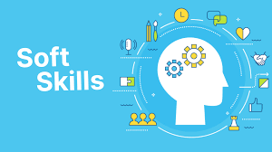

Soft Skills

- Colaboração
Se tem uma habilidade procurada em primeiro lugar no mercado de trabalho é a colaboração. Quem tem espírito coletivo sabe trabalhar em grupo e as chances de sucesso nos projetos são infinitamente superiores.
- Flexibilidade
A flexibilidade também é algo muito importante, tanto para trabalhar em grupo quanto para se adaptar ao que é solicitado.
- Comunicação eficaz
Essa habilidade está diretamente relacionada à colaboração e a flexibilidade. A comunicação eficaz é requisito para se fazer entender de maneira objetiva e para transmitir orientações claras, quando necessário
- soft-skills